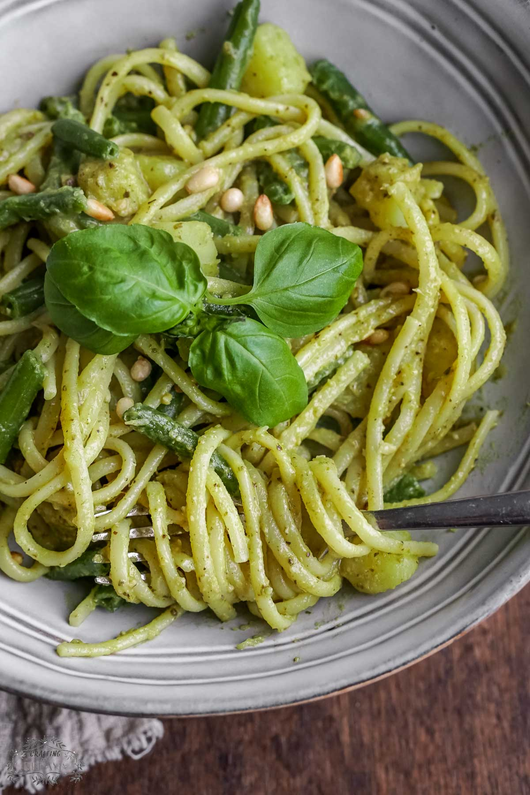

Home
Trenette

Description
Trenette al Pesto is a traditional pasta dish from Genoa in the Liguria region of Italy, famously featured in the Disney-Pixar movie Luca.
Ingredients
- Pasta: 500g trenette or linguine
- Vegetables: 1 large peeled and diced potato, plus 100g green beans cut into short pieces
- Pesto Genovese: Fresh basil leaves, garlic cloves, pine nuts, coarse sea salt, extra-virgin olive oil, Parmigiano Reggiano, and Pecorino Romano.
Steps
- Make the Pesto: Crush or blend garlic, pine nuts, and coarse salt, then add fresh basil and slowly stream in extra-virgin olive oil and grated cheeses until creamy.
- Boil the Veggies and Pasta: Cook the diced potatoes and green beans in a large pot of salted boiling water along with the trenette pasta so everything finishes together.
- Combine: Reserve a splash of starchy pasta water, drain the pasta and vegetables, and toss them off the heat with the pesto and pasta water to create a silky, glossy coating.